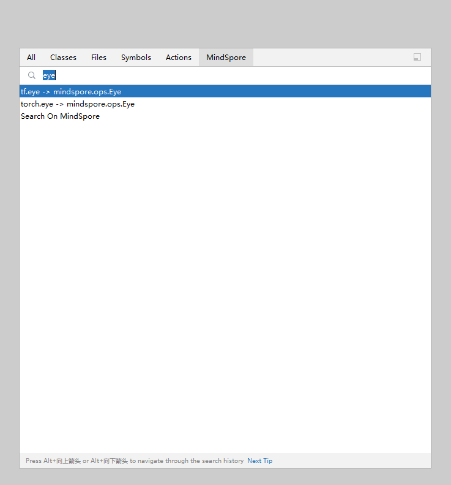

使用指南
RELEASE NOTES
快速搜索MindSpore算子，在侧边栏直接展示算子详情。
为方便其他机器学习框架用户，通过搜索其他主流框架算子，联想匹配对应MindSpore算子。
双击shift弹出全局搜索页面。
选择MindSpore。
输入要搜索的PyTorch或TensorFlow的算子，获取与MindSpore算子的对应关系列表。

点击列表中的条目，可以在右边侧边栏浏览对应条目的官网文档。